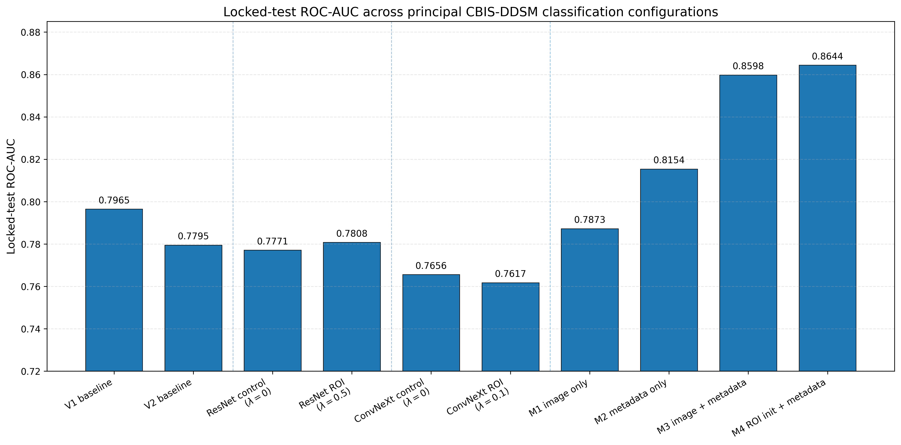
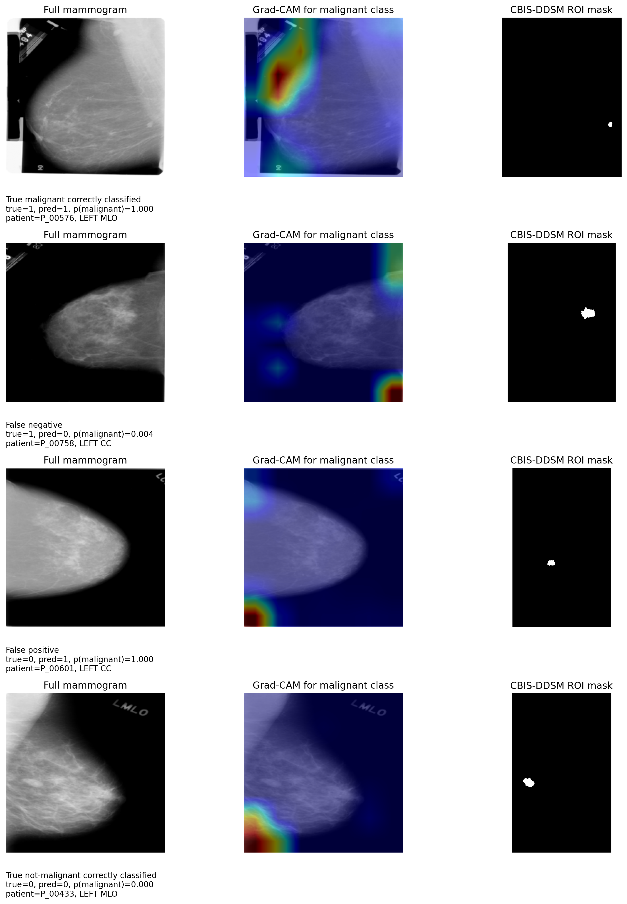
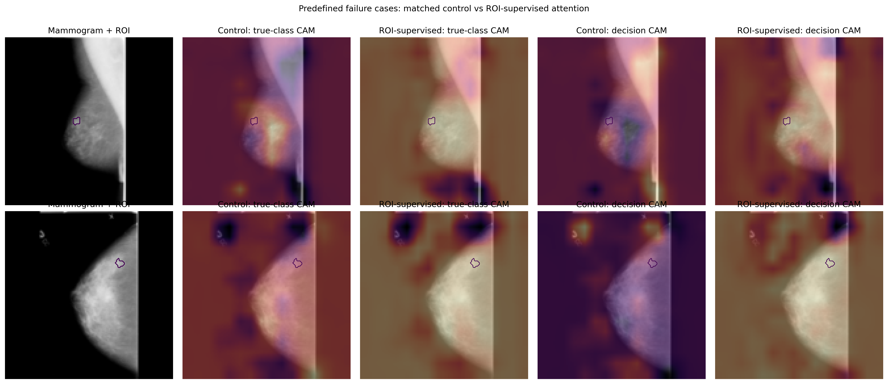
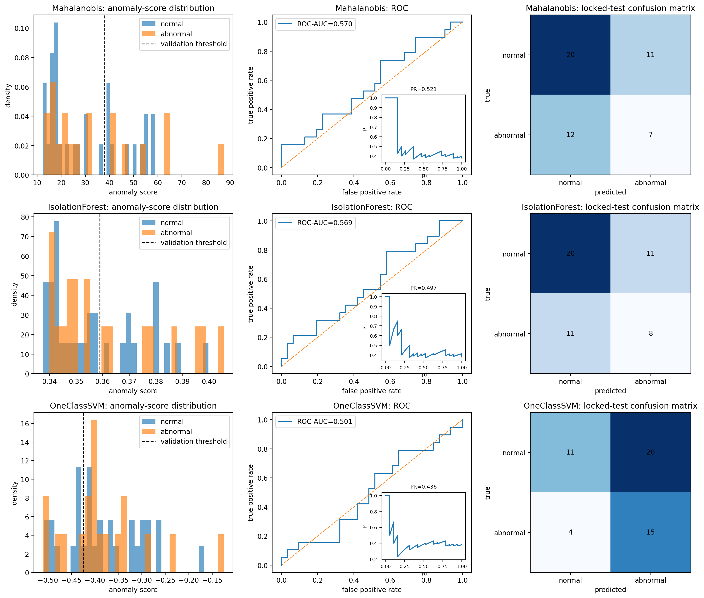
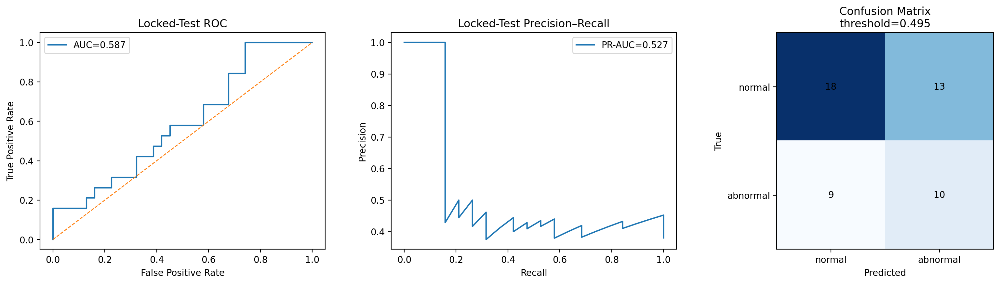

Grad-CAM & Radiologist ROI
Qualitative comparison between model activation and annotated lesion regions.
A dissertation investigating mammogram classification, radiologist ROI-guided attention, model localisation, multimodal image–metadata fusion, and anomaly detection.
The project examines both predictive performance and spatial localisation rather than treating classification accuracy alone as evidence that a model is using medically relevant image regions.
Mammography deep-learning models can achieve useful classification performance while still relying on image regions that do not necessarily correspond to radiologist-identified lesions.
This dissertation therefore investigates whether explicit ROI-guided attention supervision can improve spatial alignment between model activation and annotated lesion regions.
The main experimental pipeline used CBIS-DDSM mass cases with patient-disjoint partitions. Classification experiments were complemented by Grad-CAM localisation, ROI registration, class-specific attention supervision, multimodal image–metadata fusion, cross-backbone analysis, and failure-case evaluation.
A separate mini-MIAS branch investigated normal-versus-abnormal discrimination through both one-class anomaly detection and supervised learning.
Selected classification, multimodal and localisation findings from the dissertation.
CBIS-DDSM exploratory analysis and patient-disjoint experimental partitions.
Baseline and breast-focused 512 × 512 mammogram classification pipelines.
Class-specific model activation compared with radiologist-defined lesion ROIs.
Class-specific attention supervision encouraging spatial alignment with lesion regions.
Image representations combined with breast density, mass shape and mass-margin metadata.
mini-MIAS anomaly detection and supervised normal-versus-abnormal experiments.
The ResNet-50 mammography pipeline achieved a locked-test ROC-AUC of 0.7965, establishing a useful classification baseline for the later localisation and ROI-guided experiments.
The project subsequently evaluated whether improving where the model attends leads to corresponding improvements in predictive discrimination.


Class-specific ROI-guided attention supervision improved several localisation measures, including Pointing Game and pixel-level average precision.
However, improved attribution overlap did not produce a clear statistically supported improvement in classification AUC.
This distinction between spatial alignment and predictive performance is one of the central findings of the dissertation.
The image-only multimodal configuration achieved ROC-AUC 0.7873.
Combining image representations with breast density, mass shape and mass margins increased ROC-AUC to 0.8598 for the M3 image + metadata configuration.
M4 produced the highest observed ROC-AUC of 0.8644, although the experiment did not establish a supported improvement over M3.
BI-RADS assessment was deliberately excluded from the metadata features to reduce the risk of target leakage.
Comparison of the four multimodal configurations.
Qualitative figures are shown alongside numerical metrics to support transparent analysis of model behaviour.
Qualitative comparison between model activation and annotated lesion regions.

Matched control and ROI-supervised examples used to investigate classification and localisation behaviour.

Locked-test analysis of the normal-versus-abnormal one-class anomaly-detection branch.

Supervised normal-versus-abnormal comparison using the same patient-level split.
Better alignment between attribution maps and radiologist ROIs does not necessarily result in higher classification AUC.
ROI-guided attention was investigated using both ResNet-50 and ConvNeXt-Tiny rather than relying on a single architecture.
Combining image features with carefully selected radiological metadata produced substantially stronger discrimination than the corresponding image-only configuration.
Patient-disjoint partitions, saved predictions, manifests, configuration files, bootstrap analyses, figures and experiment notebooks are preserved in the repository.
The GitHub repository contains the canonical experiment notebooks, reusable Python modules, scripts, result artifacts, figures, patient-level split manifests, documentation and test suite.